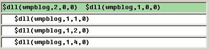
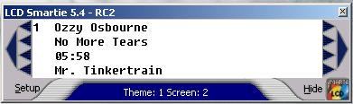

wmpblog Plugin for LCD Smartie
Download
WMPBlog Plugin can be downloaded here.
Install
- Add the Microsoft Windows Media Player Blogging plugin to your WMP install and enable it. (Download the plugin from Microsoft here and follow included directions)
- To install this plugin copy the wmpblog.dll into the plugins directory of LCD Smartie. [Only the 5.3 final and above builds are supported.]
Using the plugin
To use the plugin you will need to insert commands into the your screens.The command takes the following form: $dll(wmpblog,function,param1,param2)
Function 1: first param = which value second param = ignored
value
0 = Author
1 = Album
2 = Duration
3 = Name
4 = Title
Function 4: both params ignored
WMPlayer run state, returns 1 if WMPlayer is active, 0 if it
WMPlayer is not active.
Examples:
* $dll(wmpblog,1,0,0)
* $dll(wmpblog,1,1,0)
* $dll(wmpblog,1,2,0)
* $dll(wmpblog,1,3,0)
* $dll(wmpblog,1,4,0)
* $dll(wmpblog,2,0,0)
Skipping the wmpblog screen when Windows Media Player is not running:
1) set the wmpblog screen no disabled by unchecking the enabled box.
2) add the following two functions to the actions screen:
if $dll(wmpblog.dll,2,0,0) = 1 enablescreen(1)
if $dll(wmpblog.dll,2,0,0) = 0 disablescreen(1)
Change the screen number to the appropriate number for whatever screen you are using.
Example Setup:

Result using WMP11 playing an MP3 of Ozzy Ozbourne's Mr. Tinkertrain....
